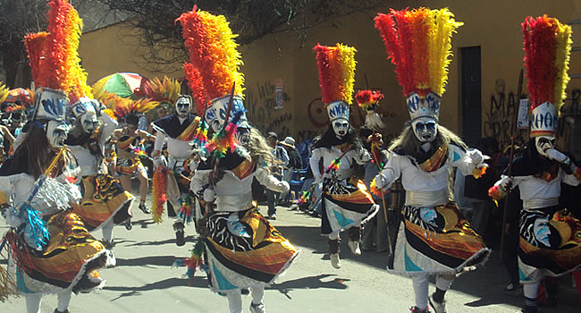
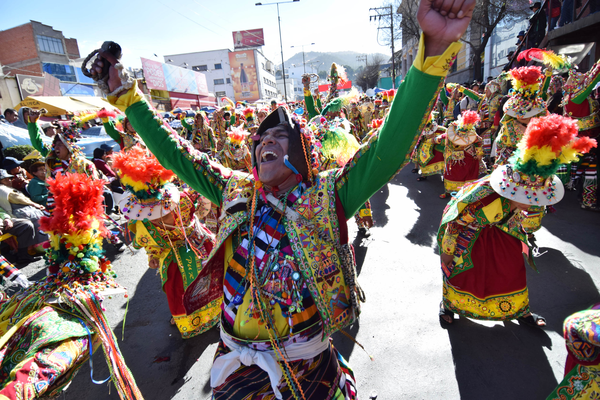

El último sábado del mes de julio de todos los años, se realiza la tradicional Entrada Folklórica Universitaria, organizada por universitarios de distintas facultades de la Universidad Mayor de San Andrés (UMSA), la misma que recorre el centro de la ciudad de La Paz.La Entrada Universitaria se instituye a partir del año 1988.
Los estudiantes participantes se organizan en comparsas y grupos de baile, bailando sobre todo danzas autóctonas y folklóricas, con el objetivo de defender, revalorizar y promocionar el patrimonio cultural paceño.Entre las danzas más representativas se pueden citar a los wititis, moceños, tata danzante, sicuris, ticca, danza arete, carnaval tupiceño, llamerada, antawaras, potolos, chapaqueada, chacarera, pujllay, tinkus, los jula julas, tobas, calcheños, tonadas, etc. Se suele llevar a cabo el último sábado de Julio
 